О сайте - справка и гайд
Зачем нужен данный сайт?
Этот сайт я сделал для 2-ух вещей:
1) Сохранить удобный список моих любимых модов, чтобы потом их не потерять
2) Делиться этим списком с остальными
3) Удобная сортировка сотни модов, при их сборке на разные версии и загрузчики
Как им пользоваться?
Ниже представлены блоки статьи с справкой о сайте, а именно: как им пользоваться какие функции и фишки он имеет, гайды по установке: Лаунчера, Модов и как оставить предложение для сайта или сообщить о баге
1) Поиск
Все просто! Вы вводите текст в поле ПОИСК и вам высвечиваются только те моды, у которых в названии или описании есть текст введенный в поле ПОИСК
2) Фильтры
• При наведении на синий значок [ ! ] - выведется краткая информация о доступных фильтрах.
• При выборе одного из предложенных загрузчиков или версии майнкрафта, моды которые поддерживают выбранные фильтры поднимутся вверх, а те что НЕ соответствуют - станут блеклыми и отправятся вниз списка
• При выборе фильтров: Категория мода и Сторона мода, моды НЕ соответствующие этим фильтрам - пропадут
• При включении флажка Скрыть библиотеки, моды библиотеки - пропадут
• При включении флажка Только избранные, моды НЕ отмеченные звездочкой - пропадут
• При включении флажка Скрыть избранные, моды отмеченные звездочкой - пропадут
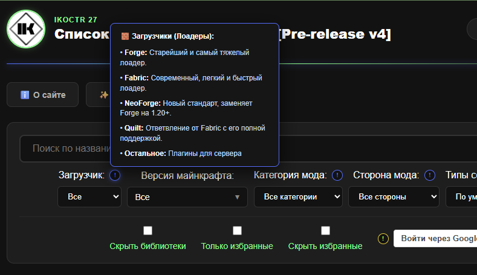
Визуал панели с фильтрами и пример справки о загрузчиках3) Авторизация через Google (лайки и избранное)
Зачем она нужна?
Она нужна для того чтобы вы могли ставить лайки модам и продвигать их для других пользователей
при выбранной сортировке - "По популярности"
Также на сайте реализованна функция ИЗБРАННЫЕ. Зачем она нужна?
Все просто! Вы листаете сайт, изучаете моды и понравившееся добавляете в ИЗБРАННОЕ!
После, вы нажимаете "Только избранное" и скачиваете, поочередно нажимая Modrinth.
Спустя N-время, вы возвращаетесь на сайт, нажимаете на "Скрыть избранное" и просматриваете
новые моды добавленные на сайт!
ВНИМАНИЕ!!! Если вы не авторизуетесь то:
1) Вы не сможете ставить лайки (Просматривать их вы еще сможете)
2) При нажатии на избранное, список избранных ваших модов храниться в cookie(или Кэш, не помню).
То есть при переходе на другой браузер или его перезагрузке (удалении куки и кэша) - все избранные сбросятся!
Если не одна из этих функций вам не нужна - можете не авторизоваться.
Если же вы хотите, но возникли проблемы - нажмите на желтую кнопку [ ! ] с описанием проблемы
4) Счетчик
Все просто!
Левое число - показывает сколько модов соответствует выставленным фильтрам/поиску
Правое число - сколько всего модов на сайте
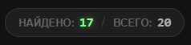
Счетчик модов5.1) Плашка мода (Обычная)
Плашка мода представляет из себя:
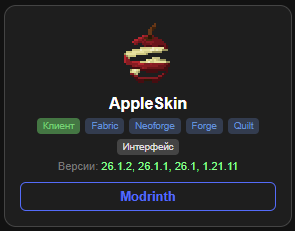
Обычная плашка мода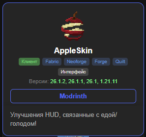
Описание мода
• Иконка мода (загружается динамически с Modrinth)
• Название мода (загружается динамически с Modrinth)
• Теги для фильтров (загрузчики и версии - загружаются динамически с Modrinth)
• Кнопка Modrinth - перекидывает на страницу мода на этом ресурсе, где вы его и можете скачать во вкладке Versions
• Краткое описание - выезжает снизу мода при нажатии на него
Про то как сортируются моды вы можете узнать в справке "Сортировка" (Синяя кнопка [ ! ] )
5.2) Плашка мода (Аддон)
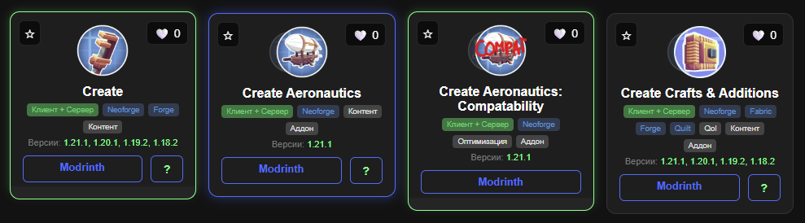
Плашка мод аддона следует за своим родителем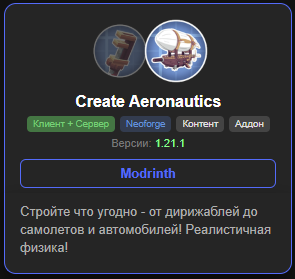
Описание мода аддона
Мод аддон отличается лиш двумя вещами:
• Они игнорируют правило сортировки по алфавиту и встают за своим родителем
• При раскрытии описания, слева от иконки Аддона, выплывает тусклая иконка мода родителя
• При наведении на мод аддон - зеленной обводкой показывается его "Родитель"
При наведение на "Родителя" - зеленной обводкой показываются его аддоны
Для примера обратите внимание на фото с Create Aeronautics, который является аддоном к Create и "Родителем" для CA: Compatability.
5.3) Плашка мода (С подробным описанием)
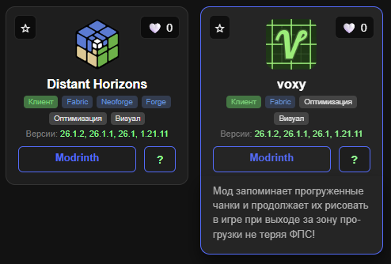
Плашки модов имеющих подробное описание (краткое описание не куда не делось)
При нажатии на плашку мода, также высвечивается краткое описание
НО! Для некоторых модов доступно подробное описание, которое можно
вызвать нажав на [ ? ]
(оно отображается поверх главной страницы сайта)
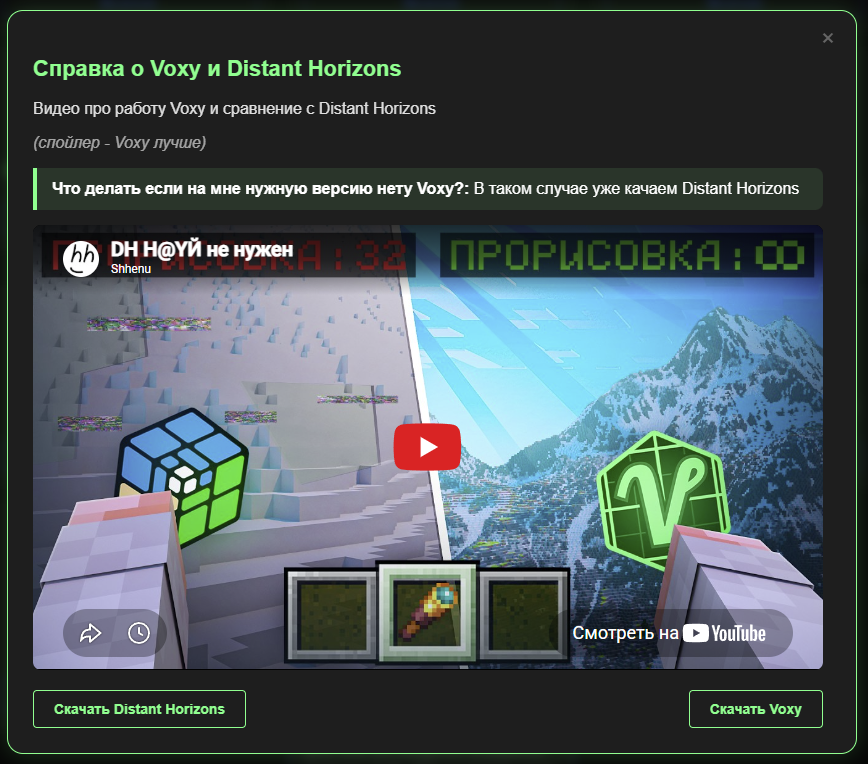
Пример подробного описания мода
Подробное описание может содержать:
• Обычный текст
• Особый текст в зеленной рамке
• Картинки
• Ролики с YouTube
• Кнопки-ссылки на интернет ресурсы
• Кнопку "СКАЧАТЬ" (обычно мои конфиги (настройки) мода)
6) Скачивание модов с Modrinth
Вы уже могли заметить что у всех модов есть плашка Modrinth
Этот пункт для тех, кто не понимает как скачать мод...
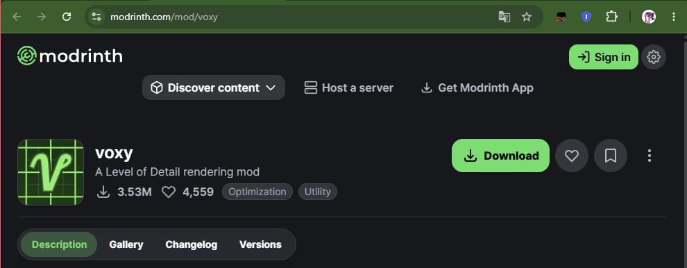
Страница мода (описание) после нажатия на Modrinth в плашке мода
• Ниже будет представлено описание мода от его разработчика
• Если интересно или вы не поняли прикол мода из моих уст - советую прочитать
- - - Собственно для скачивания мода надо нажать на Versions - - -
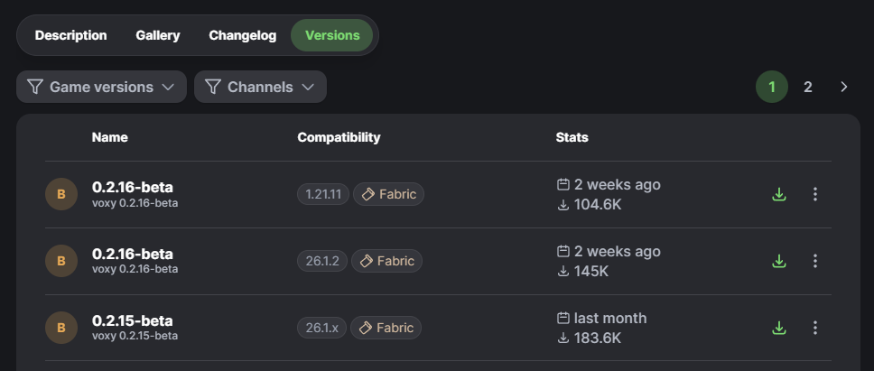
Страница мода (Versions) с выбором версии майнкрафта и загрузчика
Тут вы увидите куча версий мода для скачивания.
Вам же надо под плашкой (Description/Gallery(если есть)/Changelog/Versions) выбрать:
• Game version (версию игры)
• Platform (Загрузчик: Fabric, Forge и др. )
Если нету выбора версии ИЛИ загрузчика (как на фото с Voxy), то значит мод
не поддерживает другие версии/загрузчики.
Как и было сказано ранее, чтобы узнать заранее, до захода на Modrinth, доступен ли мод на определенной версии или загрузчике - смотрите теги на плашке мода. Не забывайте что вы можете отсортировать моды по интересующим вам версиям и загрузчикам!
Гайды по установке майнкрафта и модов
Вот 2 ролика о установке лучшего лаунчера (И для пиратов, И для людей с лицухой)
Новое
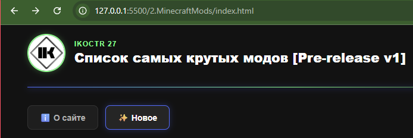
Вкладка ✨Новое✨
В ней вы можете отслеживать изменение сайта, будь это
добавление новых модов или функций и фишек для сайта.
Последние обновления - сверху, старые - снизу.
Предложения
Писать свои предложения для улучшения сайта, или добавления модов
вы можете на моем GitHub в репозитории с этим сайтом, во вкладке Issues
Нажмите New issue (зеленная кнопка справ) и опишите ваше предложение.
Я потом посмотрю его и закрою с комментарием.
Ссылка на: GitHub - issues
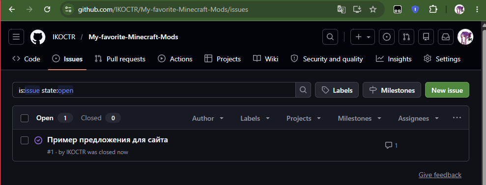
Вкладка Issue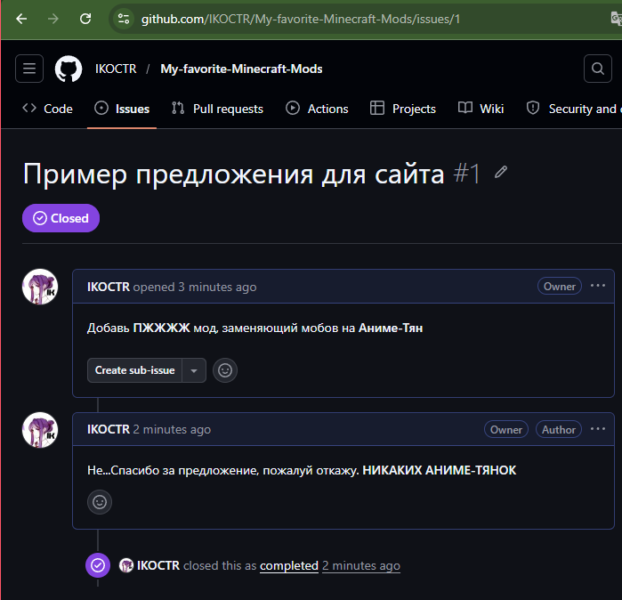
Пример закрытого предложения с моим комментарием